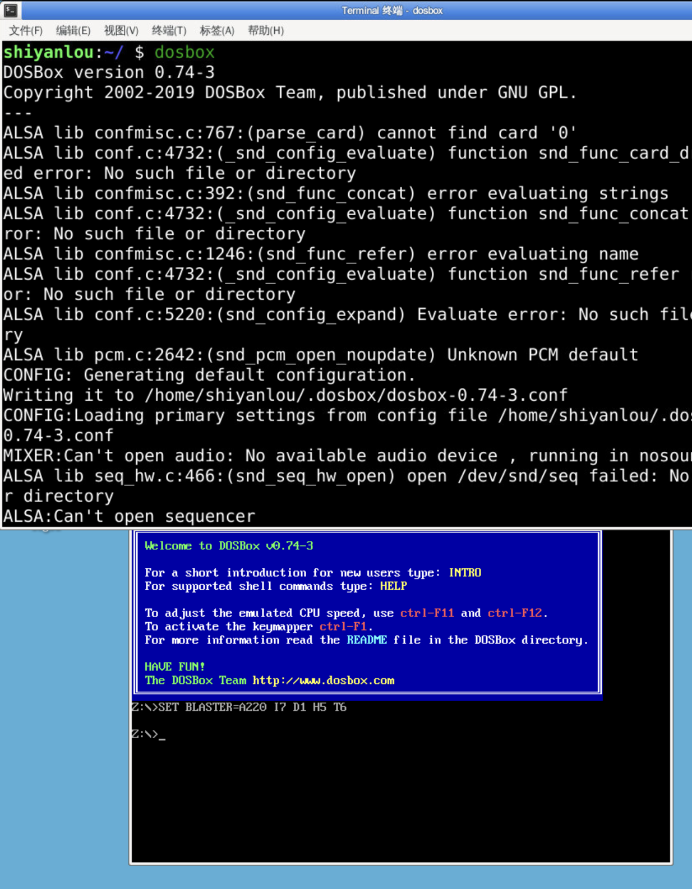
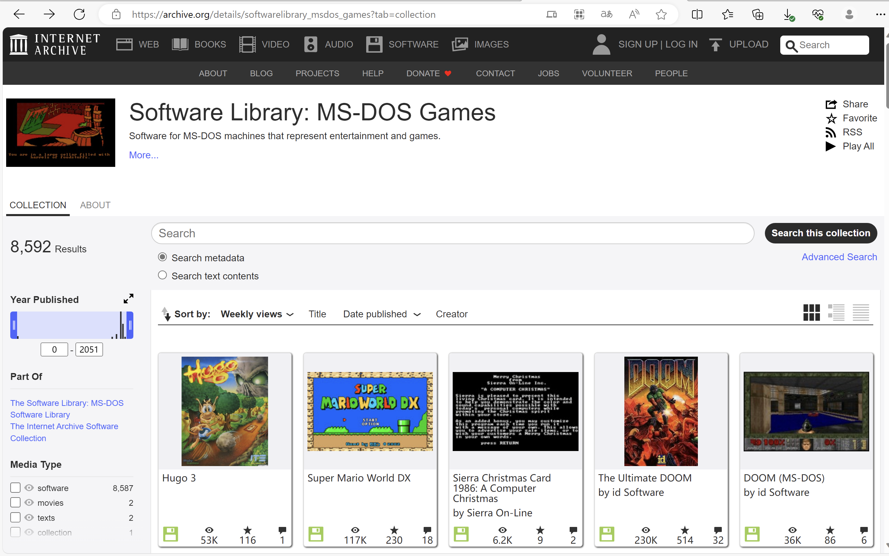
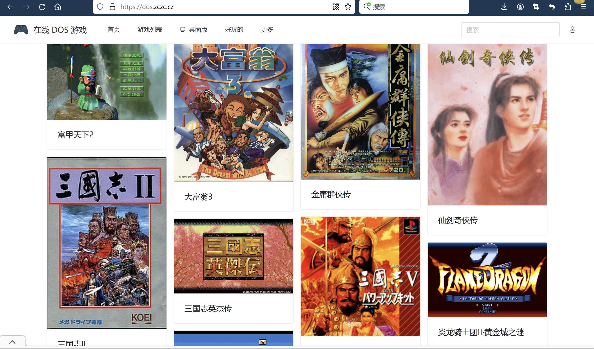
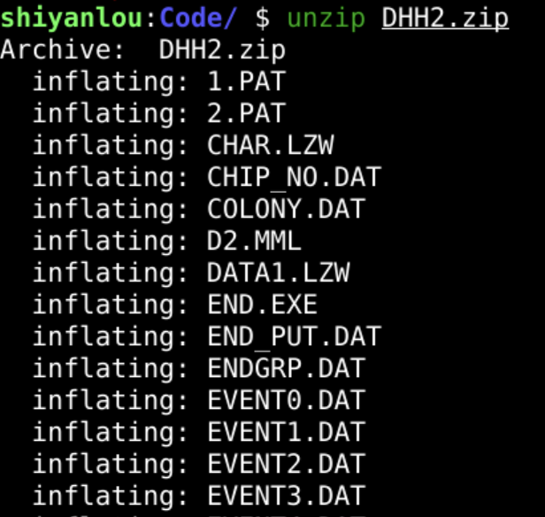
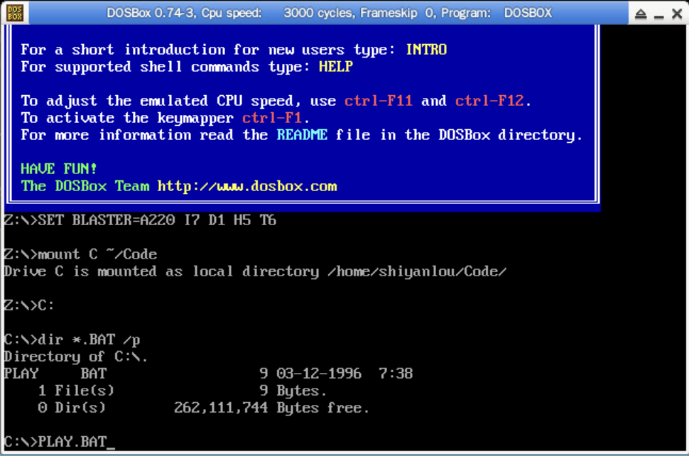
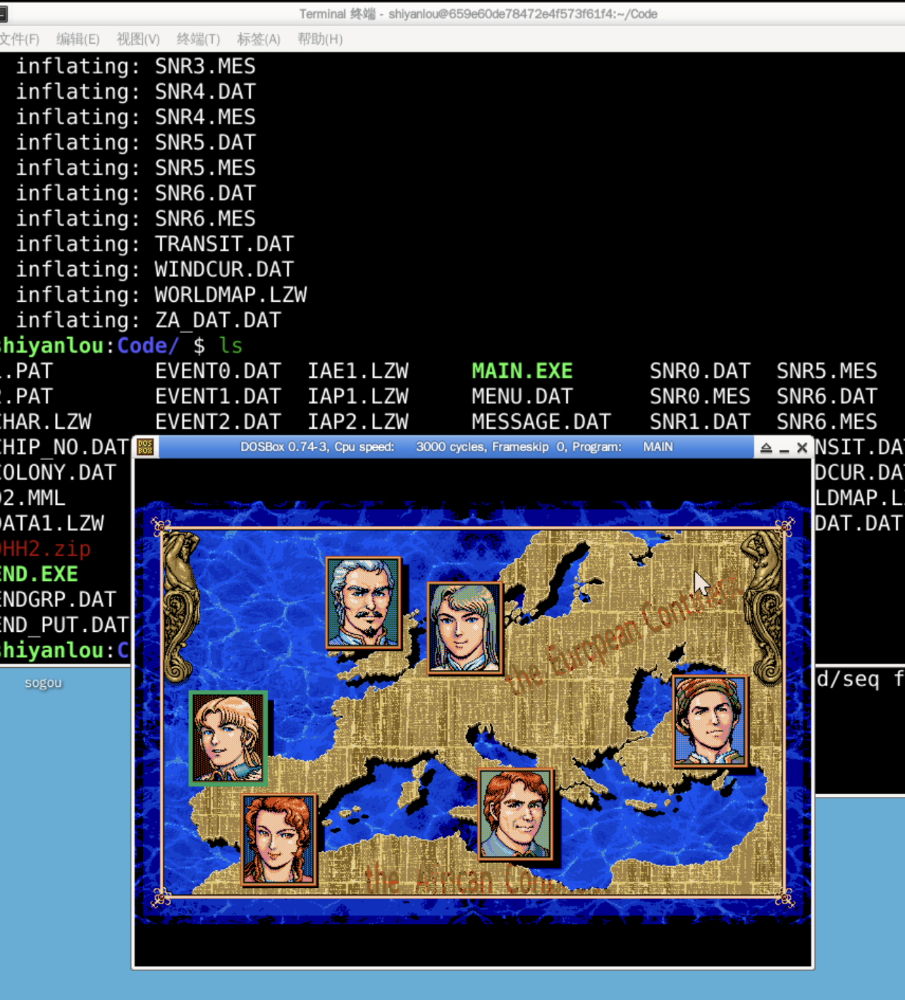
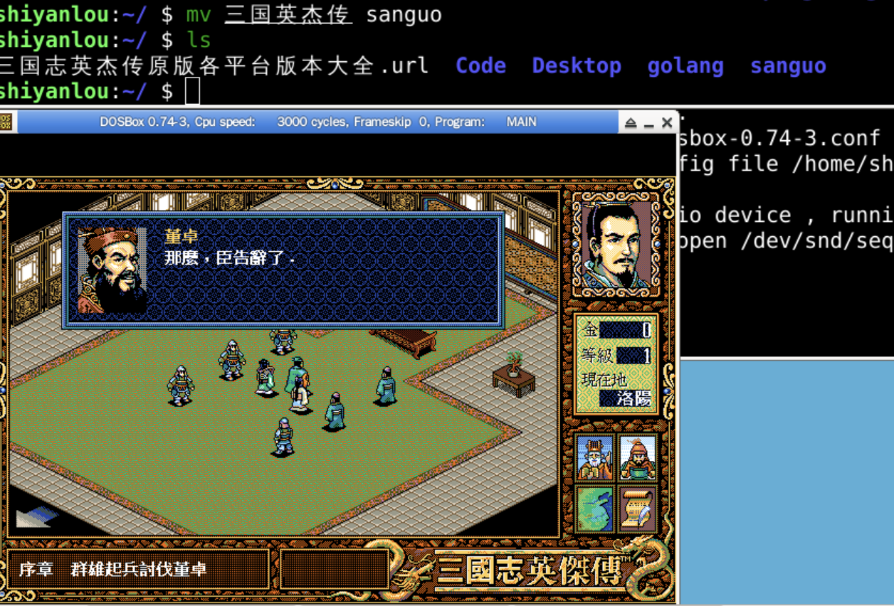

sudo apt update
yes | sudo apt install dosbox
dosbox

firefox https://archive.org/details/softwarelibrary_msdos_games?tab=collection

firefox https://dos.zczc.cz/

firefox https://dosasm.github.io/docs/references/dos-games
firefox https://u062.com/file/17308191-373149866
unzip DHH2.zip



